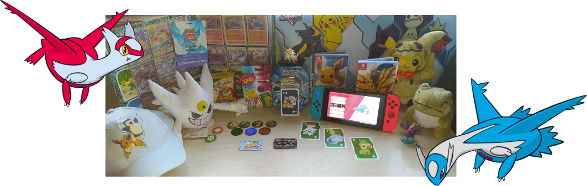
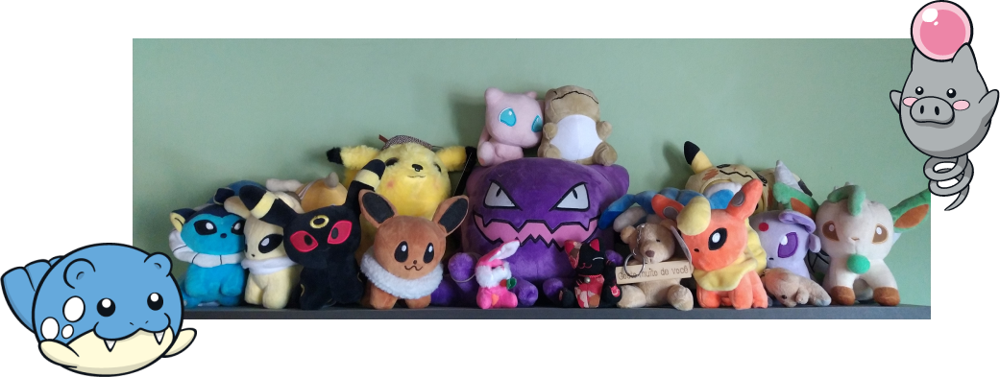

Tudo começou quando, aos 3 anos de idade, em
1998, eu ganhei de presente de aniversário um
GameBoy Color dos meus tios que estavam
voltando de uma viagem ao Japão. O videogame
veio com uma fita do Pokémon Yellow.
Amei demais o presente, e foi aí que surgiu minha
paixão por Pokémon. Não tenho uma foto da época, mas ainda tenho meu GameBoy.
Conforme fui crescendo, sempre acompanhei o desenho do Pokémon e joguei
tudo o que tinha direito. Ao longo dessa trajetória, consegui colecionar alguns
itens e hoje me orgulho bastante dessa mini coleção:

Dentre os itens da minha coleção, os que tenho mais apego emocional são as
pelúcias. Algumas ganhei de pessoas que amo muito - minha vó e meu noivo -
e outras simplesmente comprei. Tenho uma prateleira cheinha delas:

E por falar em pessoas que amo, o
Pokémon também é um gosto que
fortalece ainda mais a união que tenho
com meu noivo. Ele também é um fã
da franquia, e poder dividir tudo isso
com ele não tem preço 💛
 Pokémon e eu
Pokémon e eu
 Guardo meu GameBoy
Guardo meu GameBoy